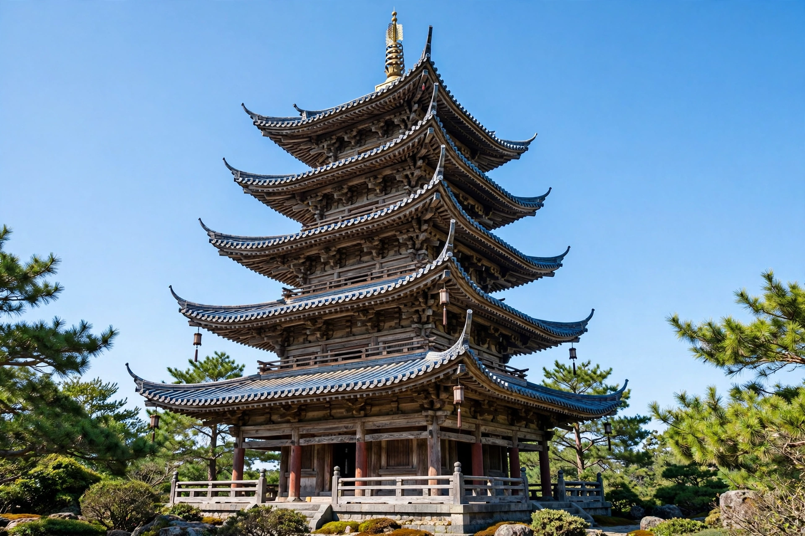

| Pagoda | |
|---|---|
 A multi-storey pagoda | |
| Origin | East and Southeast Asia; derived from the Indian stupa |
| Religions | Buddhism, Taoism, folk religion |
| Function | Housing sacred relics; temple landmark |
A pagoda is a tiered tower with multiple eaves, common in the architecture of East Asia and Southeast Asia, including Nepal, China, Japan, Korea, and Vietnam. Most pagodas were built for religious purposes, usually as part of Buddhist temple complexes, to house sacred relics or scriptures, though some served Taoist or secular functions.
The pagoda evolved from the Indian stupa, a mound-like structure containing Buddhist relics, combined with the Han-dynasty Chinese watchtower (louge). As Buddhism spread along the Silk Road, the form was adapted in each country: Chinese pagodas were built of brick, stone, wood, or glazed tile; Japanese pagodas (tō) are wooden five-storey structures renowned for earthquake resistance, achieved through flexible joinery and a suspended central pillar (shinbashira).
Pagodas typically have an odd number of storeys, reflecting yang symbolism, and are crowned with a finial of stacked rings representing Buddhist cosmological elements. Their height made them focal points of temple precincts and city skylines, and they were often credited with improving local feng shui.
Categories: Pagodas · Buddhist architecture · Towers